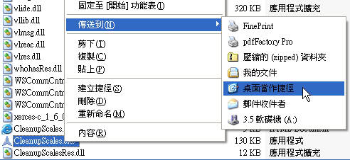
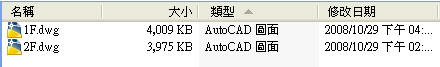
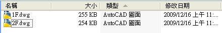

從AutoCAD 2008版本開始，增加了一個 註解比例 的新功能，但是由於軟體的 註解比例BUG 會造成產生大量的 錯誤比例清單，這樣會造成檔案異常的大，在開啟圖面時也會造成lag，而且當你插入了這個問題圖檔也會有這些問題，建議隔離未處理的圖檔，否則會類似病毒的狀況蔓延開來。
原廠有釋出免費修復程式(CleanupScales.exe)，此程式適用於 AutoCAD 2008 及 AutoCAD 2009 二個版本，使用 AutoCAD 2010版本 當開啟有 錯誤比例清單 的圖檔會提示你自動清除，若是您使用 AutoCAD 2007 以下版本 ，開啟 錯誤比例清單問題圖檔 時不會造成lag，但是檔案異常放大問題依然存在，建議你趕快處理不要忽視。
1.根據您的操作系統（32位或64位），下載適合的自解壓縮可執行文件。

2.將解壓縮到文件 CleanupScales.exe，CleanupScalesRes.dll，CleanupScales.html 複製後，再貼到您的 AutoCAD 安裝目錄。

3.建立 CleanupScales.exe 捷徑(建議放到您的桌面)。

4.請記得更名方便日後辨識及使用。
>>>
注意：請依照您所用的AutOCAD版本，下載適合的原廠修復程式。
1.可以選擇資料夾或圖檔二個方式，選用的資料夾中所有圖檔的 比例清單 會全部重置(RESET)，會根據以下預設的樣板檔來更新。
C:\Documents and Settings\使用者登入帳號\Local Settings\Application Data\Autodesk\AutoCAD 版本\版本代號\cht\Template\acadiso.dwt

2.更新完畢後會出現以下訊息。

△未處理的檔案大小

△已處理的檔案大小

※相關主題※
錯誤的註解比例(比例清單)-造成檔案異常容量變大
https://www.autocad-tw.com/forum-f12/topic-t812.htm
補充：
1.從AutoCAD 2009版本開始，當開啟有大量的註解比例時，系統會出現對話方塊來提示喔!!

2.在2008、2009、2010版本中也可以輸入 scalelistedit指令單一圖檔手動清除。